OTHER PROJECTS
기타 프로젝트 - JO
해운사와 항만이 복잡한 정산, 수익 분배, BSA 계약 관리, 할당 설정, 월간 정산, 그리고 데이터 검증을 효과적으로 관리하기 위한 종합 솔루션입니다. 특히 공동 운영 항로에서 여러 이해관계자와의 수익 및 비용 분배, BSA 관리 등을 자동화하고 모니터링하는 기능이 핵심입니다.
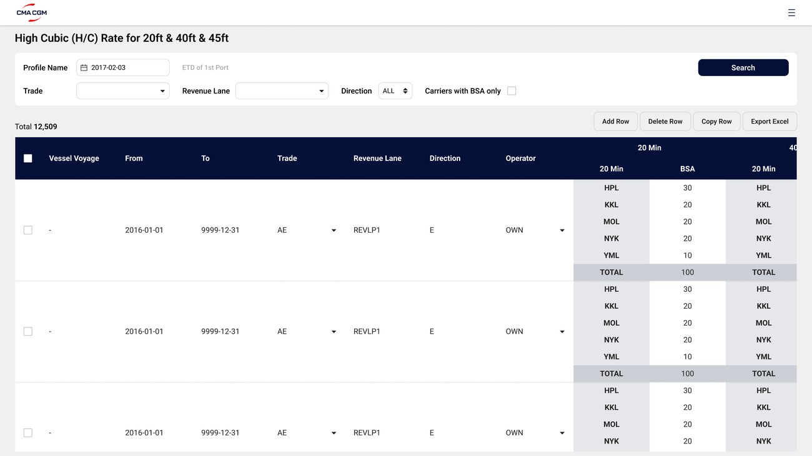
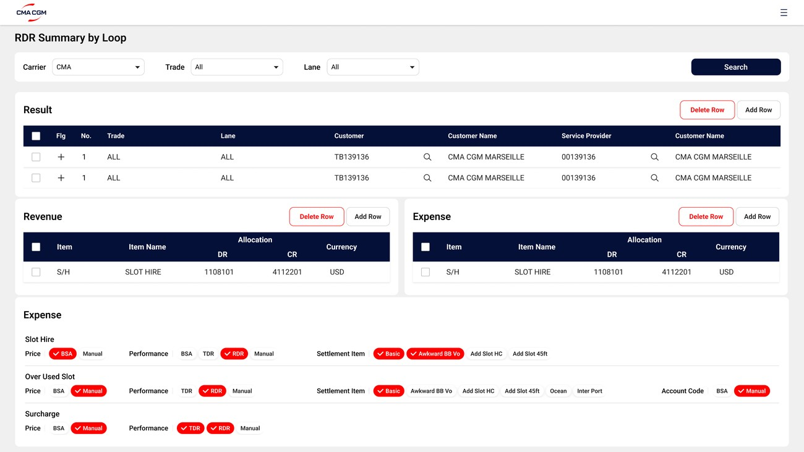
MUKI
기여도 80%
MUKI는 방카슈랑스 영업사원들을 위한 맞춤형 솔루션으로, 영업 현장에서의 주요 불편함을 해소하고 효율적인 영업 활동을 지원하는 모바일 애플리케이션입니다. 고객 정보 관리와 활동 기록, 판매 기회 확보 등을 간편하고 직관적으로 수행할 수 있도록 설계되었습니다.
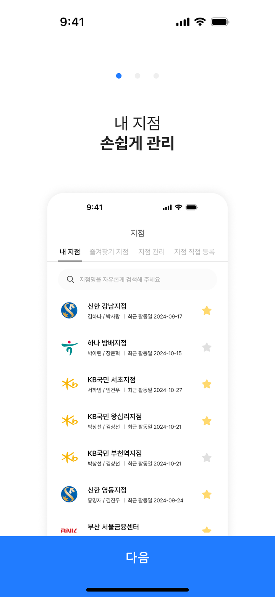
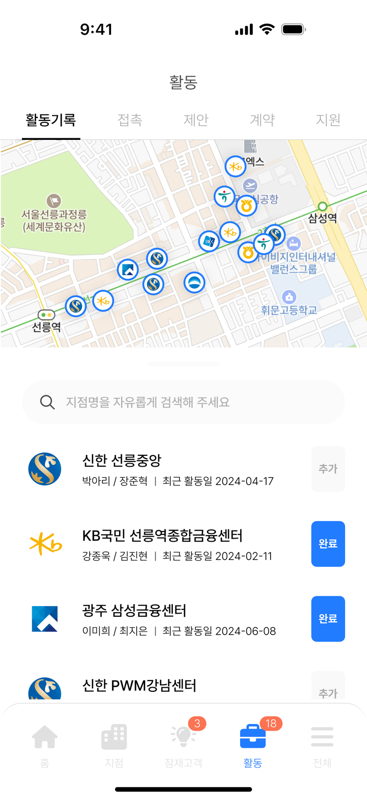
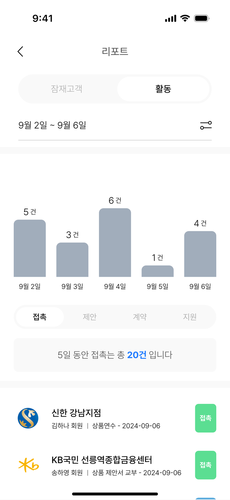
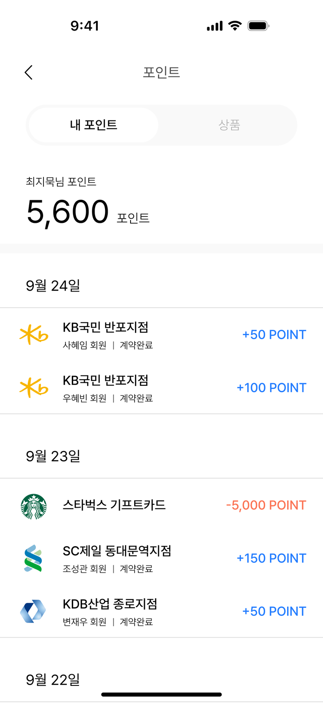
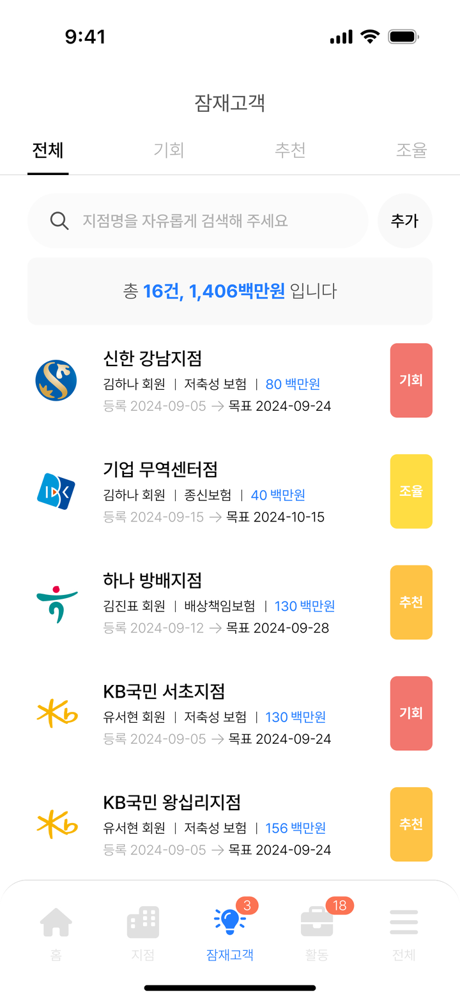
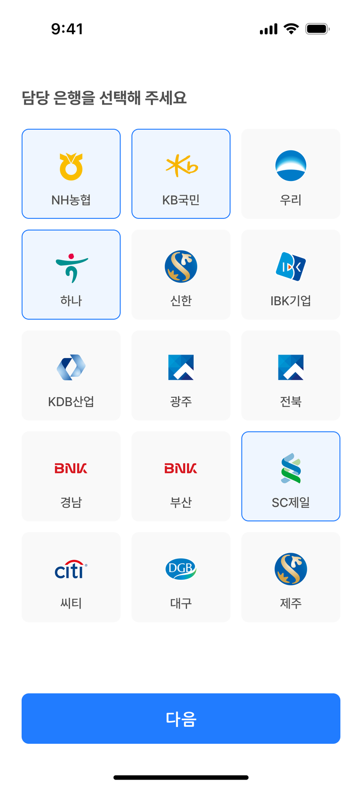
AS IS PROBLEM
페인포인트
배경설명
MUKI 프로젝트는 방카슈랑스 영업사원들이 모든 활동 및 고객 정보를 효율적으로 관리할 수 있도록 돕는 솔루션 프로그램입니다. 기존에는 영업사원들이 수기로 정보를 기록하거나 전화번호부, 메모장 등을 활용하여 고객 정보를 관리하고 있었습니다. 이로 인해 정보 업데이트의 지연, 고객 정보의 누락, 그리고 업무 효율성 부족 문제가 발생하였고, 영업사원들이 효율적으로 고객과 소통하고 영업 활동을 추적하는 데 큰 어려움이 있었습니다.
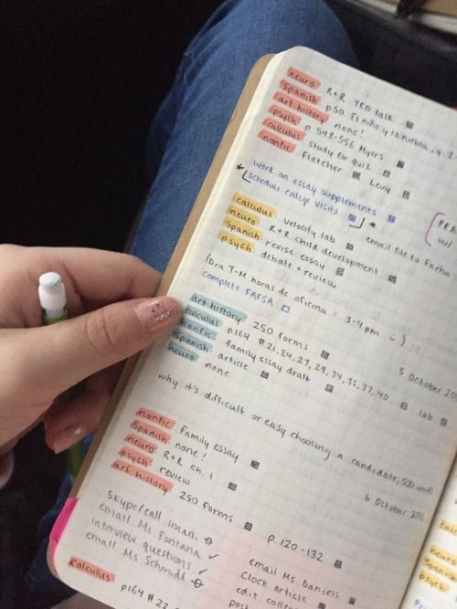
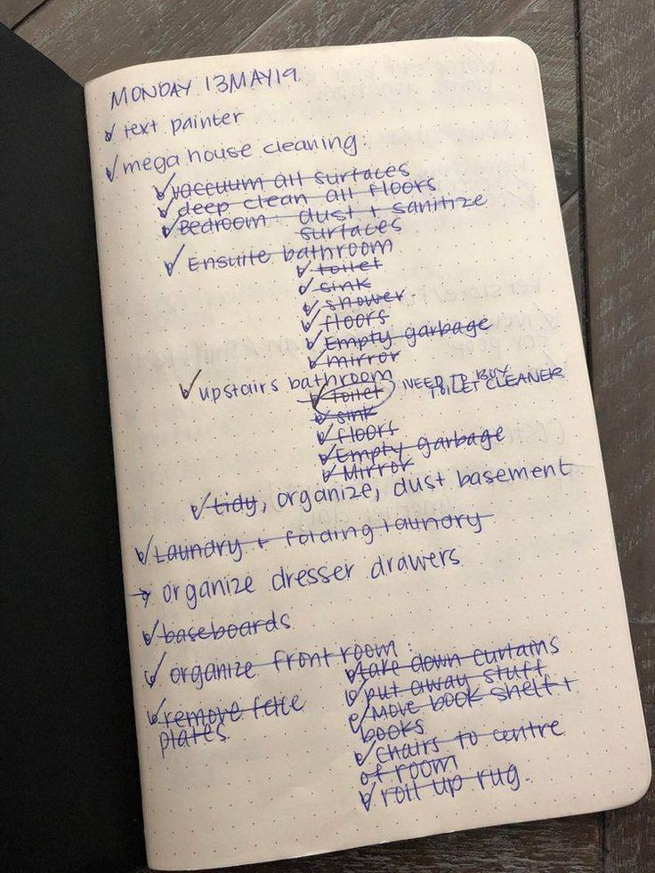
영업 내용을 수기로 작성한 영업사원의 노트
문제 정의
현재 영업 방식에 불편함을 많이 느끼나요?
MUKI 솔루션에 어떠한 기능이 있으면 좋겠나요?
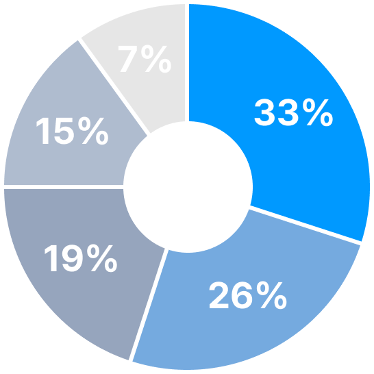
고객 정보 관리 잠재고객 추적 및고객 정보 관리가 어려워요 - 30%
고객 정보가 수기 기록이나 전화번호부로 관리되어 업데이트와 검색에 시간이 많이 소요되고, 업무 효율성이 낮습니다.
잠재고객 추적이 불편해요 - 25%
잠재고객을 단계별로 관리하지 못하고, 활동 추적이 어렵고, 중복 연락으로 영업 기회를 놓치는 문제가 발생합니다.
방문 기록을 관리하는 게 불편해요 - 20%
방문 기록을 수동으로 관리해야 하며, 기록 누락이나 잘못된 정보로 정확한 영업 활동 추적이 어렵습니다.
데이터 분석 도구가 부족해요 - 16%
효율적인 데이터 분석 도구가 부족해 영업 전략 수립이나 의사결정에 어려움이 있습니다.
TO BE GOAL
프로젝트의 목표
GOAL
주요 해결방안
고객 정보를 한 플랫폼에서 관리하여, 정보 업데이트와 검색 시간을 절감하고 업무 효율성을 향상시킵니다.
#SOLUTION-01
고객을 단계별로 관리하여, 각 단계에서 영업 활동을 추적하고 효율적으로 영업 기회를 관리할 수 있습니다.
#SOLUTION-02
자동화된 방문 기록 시스템을 통해 정확한 방문 기록을 자동으로 관리하고, 영업사원들은 더 이상 수동 기록에 시간을 소모하지 않으며, 업무 효율성이 증대됩니다.
#SOLUTION-03
스마트 코치를 통해 실시간으로 영업 데이터를 분석하고, 이를 통해 효율적인 의사결정이 가능해지고, 영업 성과를 향상시킬 수 있습니다.
#SOLUTION-04, #SOLUTION-05, #SOLUTION-06
SOLUTION 01
고객 정보 통합 및 아카이브 구축
AS-IS
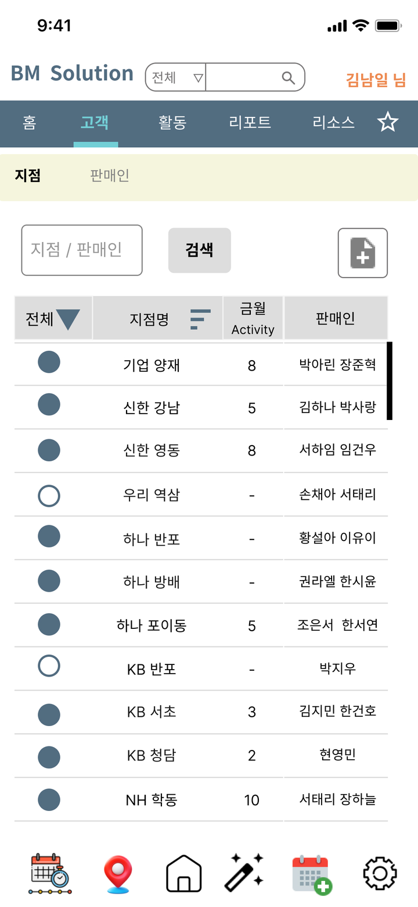
TO-BE
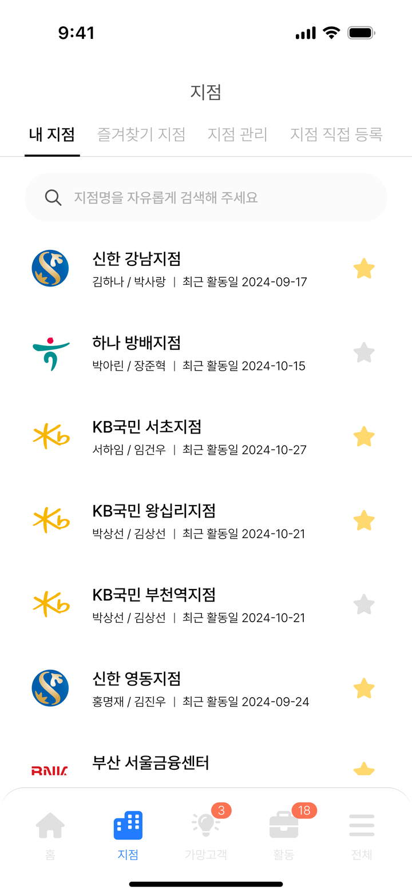
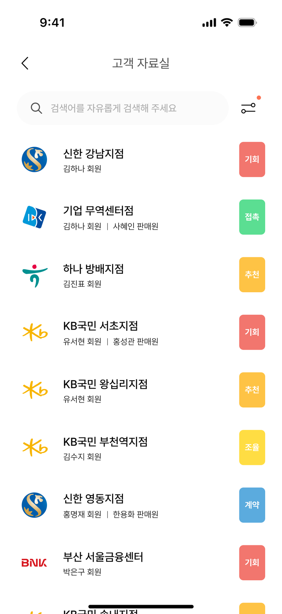
고객 정보 검색 시간
약 5분(80%) 단축
만족도 조사
90%
90%의 영업사원이
개선된 시스템에 만족
페인포인트
고객 정보 관리의 어려움
고객 정보가 여러 플랫폼에 분산되어 있어 정보 접근성과 업데이트가 어려움. 영업사원들은 고객 정보를 검색하는 데 평균 7분을 소요하고, 정보의 정확성에 불만이 있음.
제공된 솔루션
고객 아카이브 통합 관리
모든 고객 데이터를 한 플랫폼에서 통합 관리하도록 설계하여 정보 접근성 문제를 해결. 이를 통해 업무 효율성을 향상시키고, 고객 정보 검색 시간을 7분에서 2분으로 단축함.
사용자 반응
"고객 정보를 쉽게 찾을 수 있어서 업무가 훨씬 수월해졌습니다."
"업무 준비 시간이 줄어들어 더 많은 고객과 소통할 수 있게 되었습니다."
SOLUTION 02
잠재고객 확보 및 관리 솔루션
AS-IS
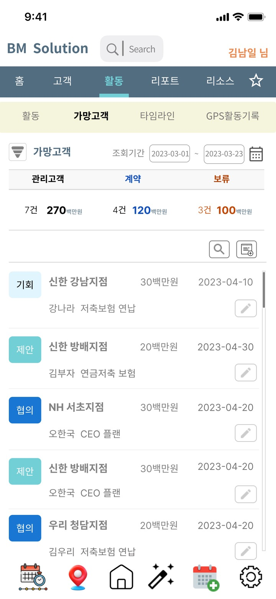
TO-BE
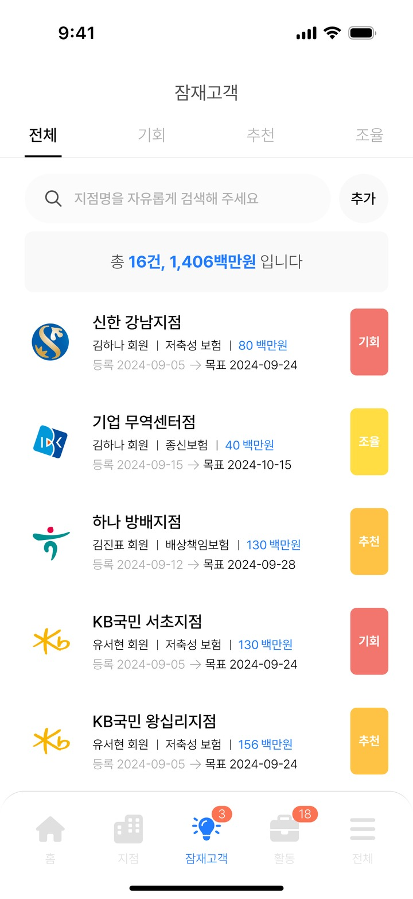
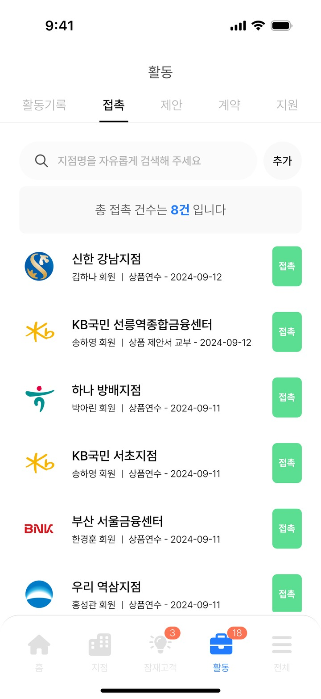
잠재고객 단계
활동 단계
전년 대비 계약 건 수 증가율
약 29% 증가
만족도 조사
84%
약 84%의 영업사원이
개선된 시스템에 만족
페인포인트
잠재고객 추적의 비효율성
잠재고객을 단계별로 관리하지 못하고, 활동 추적이 불명확하여 영업 기회를 놓치는 경우가 많음. 영업사원들이 각 진행 상황을 효율적으로 파악하지 못하고, 결과적으로 영업 성과가 저조해짐.
제공된 솔루션
잠재고객 관리 및 활동 추적
단계별 관리 시스템을 도입하여, 영업사원들이 영업 활동을 직관적으로 추적할 수 있도록 지원합니다. 이를 통해 영업 기회를 놓치지 않게 하고, 영업 효율성이 크게 향상되었습니다.
사용자 반응
“잠재고객을 등록하고 관리하는 것이 이렇게 쉬울 줄 몰랐어요. 덕분에 영업 기회를 놓치지 않게 되었습니다.”
“각 단계의 진행 상황을 시각적으로 확인할 수 있어 업무가 훨씬 더 간편해졌습니다.”
SOLUTION 03
방문 기록 관리 자동화
AS-IS
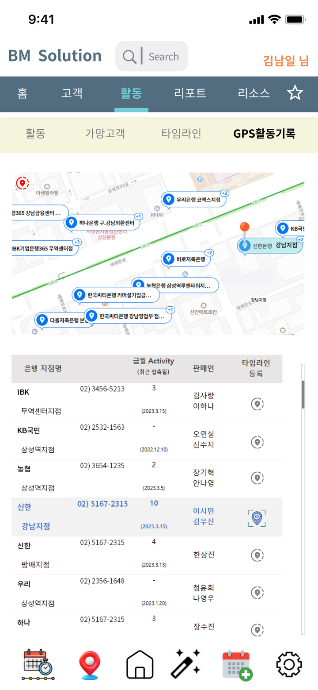
TO-BE

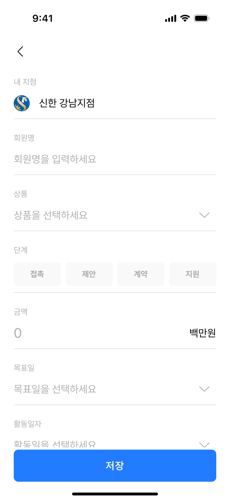
방문 기록 관리
약 4분(71%) 단축
만족도 조사
87%
약 87%의 영업사원이
개선된 시스템에 만족
페인포인트
방문 기록 관리의 불편함
방문 기록을 수동으로 관리해야 하므로 기록 누락이나 잘못된 정보가 발생할 수 있고, 이를 수정하는 데 시간이 소요되어 업무 효율성이 저하됨. 그리고 이로 인해 영업 성과가 저하될 가능성이 있음.
제공된 솔루션
방문 기록 자동화
자동화된 방문 기록 관리 시스템을 통해 GPS 기반으로 방문 이력을 자동으로 기록하고, 누락 및 오류를 방지하여 데이터의 정확성을 보장함.
사용자 반응
"방문 기록이 자동으로 저장되어, 더 이상 수동 기록이 필요 없어서 편리합니다."
"따로 기록하는 시간을 절약해 더 많은 고객 관리가 가능해졌고, 데이터 정확성이 높아져 영업에 큰 도움이 되었습니다."
SOLUTION 04
데이터 기반 맞춤형 AI - 스마트 코치
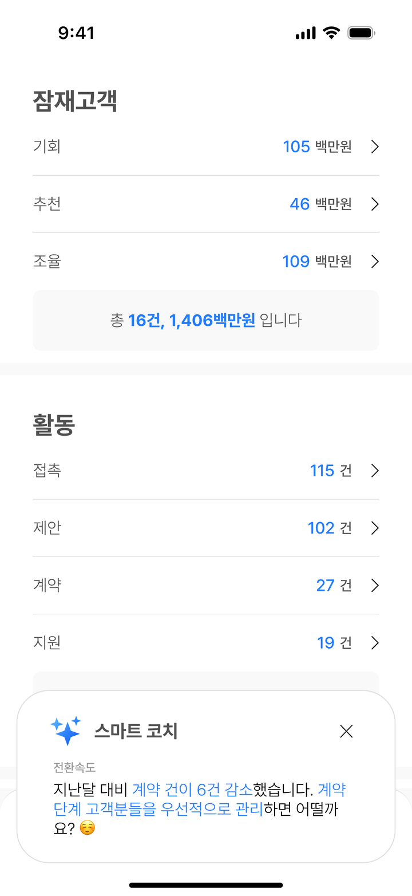
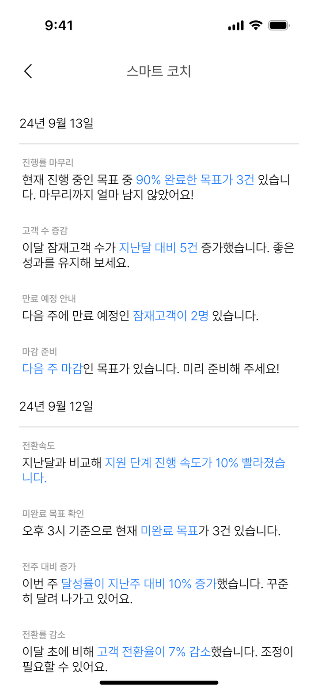
전년 대비 접촉 건 수 증가율
약 95% 증가
만족도 조사
94%
약 94%의 영업사원이
개선된 시스템에 만족
페인포인트
목표 관리의 어려움
영업 목표 달성에 필요한 정보를 놓치기 쉬움.
정보 과부하
중요한 인사이트를 효과적으로 파악하기 어려움.
제공된 솔루션
AI 기반 스마트 코치 기능
영업 활동 데이터를 분석하여 맞춤형 알림과 인사이트 제공.
개인화된 알림 시스템
사용자가 목표를 놓치지 않도록 중요 일정과 목표 달성 현황을 알림으로 제공.
사용자 반응
"목표 관리가 훨씬 쉬워졌습니다. 필요한 정보를 적시에 받아볼 수 있어요."
"데이터 기반 인사이트로 영업 전략을 효과적으로 조정할 수 있게 되었습니다."
SOLUTION 05
포인트 적립 및 활용
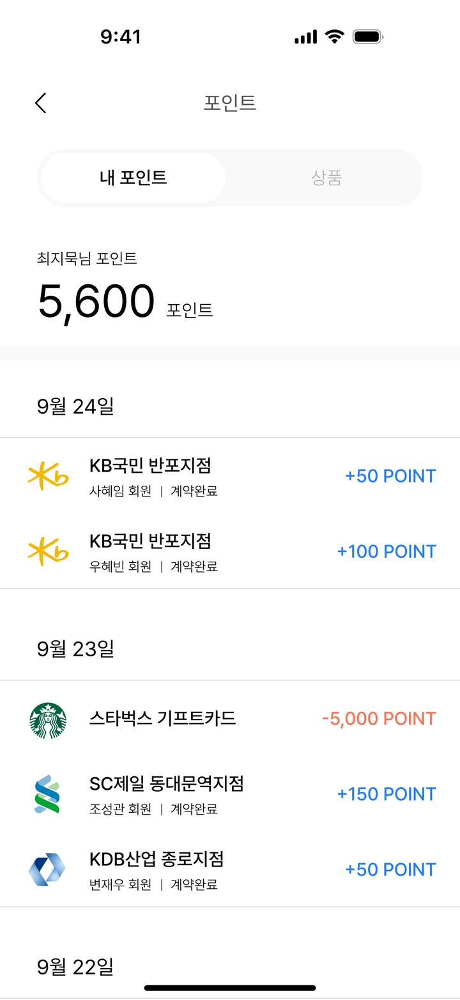
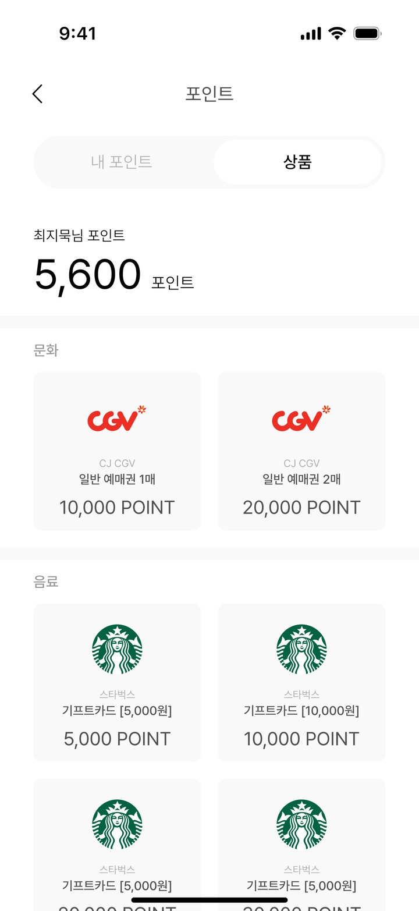
포인트 시스템 도입 전후 사용 빈도 변화 조사
만족도 조사
71%
약 71%의 영업사원이
개선된 시스템에 만족
페인포인트
동기부여 부족
고객과의 상호작용에 대한 업무 동기부여가 낮음. 즉각적인 보상 체계가 없어 영업활동에 대한 동기 부여가 부족함.
제공된 솔루션
포인트 시스템 도입
영업 활동에 따라 계약 금액에 비례하여 포인트를 적립. 이를 통해 체계적인 보상 시스템을 제공.
실질적 혜택 제공
적립된 포인트를 영화표, 기프티콘 등 실용적인 혜택으로 전환 가능하게 하여, 업무 만족도를 높임.
사용자 반응
“성과에 따라 포인트가 쌓이는 걸 보며 일에 더 열정을 느낍니다.”
“포인트로 실용적인 상품을 구매할 수 있어 업무 만족도가 높아졌습니다.”
SOLUTION 06
리포트
AS-IS
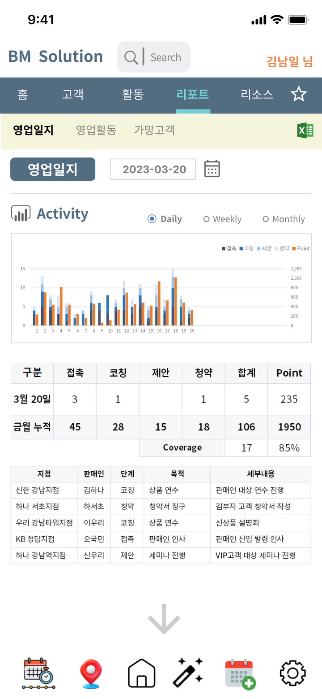
TO-BE

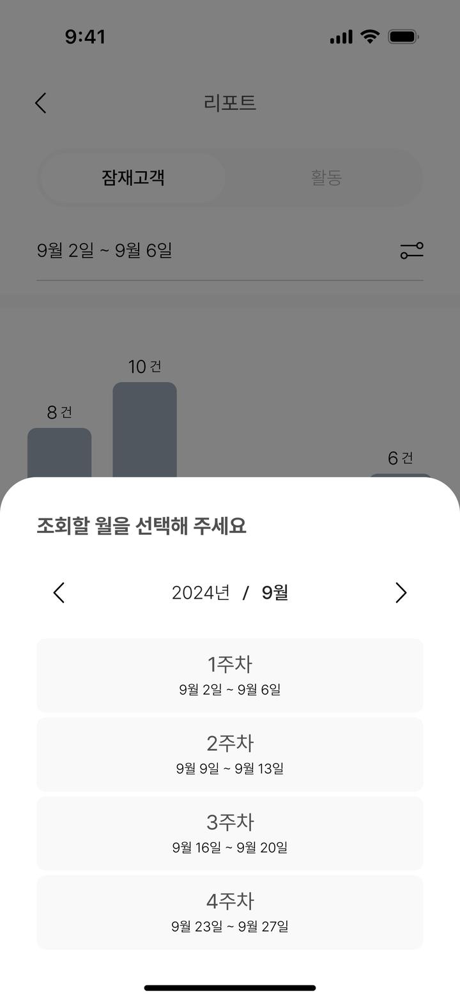
리포트 도입 전후 사용자 만족도 조사
만족도 조사
81%
약 81%의 영업사원이
개선된 시스템에 만족
페인포인트
주간 성과 모니터링 부족
영업 활동의 성과를 주 단위로 체계적으로 추적하기 어려움. 이로 인해 모두 별도로 기록해야 하는 불편함이 있으며 효율적인 영업이 어려워짐.
제공된 솔루션
주간 성과 분석
주 단위 누적 성과를 바탕으로 효율적인 전략 수립을 지원하며, 막대그래프와 데이터 항목을 통해 시각적으로 제공.
사용자 반응
"주간 활동 추세가 한눈에 보여 영업 흐름을 파악하는 데 큰 도움이 됩니다."
"영업 활동을 따로 기록하지 않아 영업에 집중할 수 있어 좋습니다."
RESULT
사용자 피드백 종합 결과
RESULT
솔루션 적용 후 사용자 반응
고객 정보 관리의 어려움 해소
“기존에는 고객 정보를 여러 시스템에서 찾아야 해서 시간이 많이 걸렸는데, MUKI 덕분에 하나의 플랫폼에서 모든 정보를 볼 수 있어요. 고객의 연락처나 과거 이력을 쉽게 확인할 수 있어서 고객과의 소통이 훨씬 원활해졌습니다.”
잠재고객 및 활동 관리의 비효율성 개선
“MUKI로 잠재고객과 활동 상황을 단계별로 관리하니까, 누가 어느 단계에 있는지 한눈에 파악할 수 있어요. 이전에는 다음 영업 단계를 놓치는 경우도 있었는데, 이제는 계획적인 영업이 가능해져서 성과가 향상되고 있어요.”
방문 기록 관리의 불편함 해소
“이전에는 방문 기록을 수동으로 입력해야 해서 정확하게 기록되지 않는 경우가 많았어요. MUKI가 GPS를 통해 방문 기록을 자동으로 해주니 관리가 편리해졌고, 놓친 기록이 없어 업무의 정확성이 높아졌습니다.”
데이터 활용의 부족 문제 해결
“데이터 기반 스마트 코치가 활동 수준과 목표 달성 여부를 알려주니, 무엇을 더 집중해야 할지 명확해졌어요. 이전에는 감각에 의존하던 부분이 많았는데, 이제는 데이터를 기반으로 영업 전략을 세울 수 있어 훨씬 효율적입니다.”
포인트 적립 및 사용 기능 제공
“영업 활동을 통해 포인트를 적립할 수 있다는 게 큰 동기부여가 되네요. 모은 포인트로 영화표나 기프티콘을 구입할 수 있어서, 고객과의 상호작용에 적극적으로 임하게 돼요. 단순한 기능이지만 의욕을 북돋아 주는 좋은 보상 체계라고 생각해요.”
리포트 기능 제공으로 성과 파악 용이
“주 단위 리포트를 통해 잠재고객과 활동 성과를 막대그래프로 시각화해서 볼 수 있으니, 제 성과를 손쉽게 파악할 수 있어요. 이전에는 활동 데이터를 따로 기록 및 분석해야 해서 힘들었는데, MUKI 덕분에 데이터를 직관적으로 확인할 수 있어 업무가 훨씬 간편해졌습니다.”
RETROSPECT
회고
배운 점
현장 테스트의 중요성
실제로 다양한 환경에서 제품을 사용해야 하는 중요성을 배웠습니다.
모바일 디자인 시스템 구축
모바일 환경에 적합한 디자인 시스템을 구축하며 iOS, Android에 대한 이해도를 높였습니다.
업무 단계별 인터랙션
영업 활동의 단계별 흐름을 반영한 인터랙션 설계를 통해 사용자의 편의성을 높이는 방법을 배웠습니다.
모바일 프로토타입 제작 향상
모바일 플랫폼에 적합한 프로토타입 제작 기술을 강화했습니다.
느낀 점
모바일 사용자 경험의 중요성 재확인
사용자의 환경을 이해하는 분석의 중요성을 재확인했습니다. 필요하다고 판단했던 기능도 사용자의 조건에 따라 그저 복잡하게 느껴질 수 있다는 것을 확인했고 상황에 맞지 않을 경우 과감히 제거하는 결단이 필요하다는 점을 깨달았습니다. 이로서 사용자의 환경을 이해하는 분석의 중요성을 다시 한 번 실감했습니다.
현장 테스트의 효과
은행이 밀집된 테헤란로를 걸어다니며 제품을 실제로 테스트한 경험이 매우 인상적이었습니다. 이 과정에서 사용자 피드백을 즉각적으로 받을 수 있었고, 실제 사용자의 행동 패턴을 관찰하며 개선점을 발견할 수 있었습니다.
회고
프로토타이핑의 중요성
프로토타입을 제작하고 다양한 피드백을 받아 개선할 수 있었습니다. 애자일 방법론의 적용이 프로젝트 전반에 긍정적인 영향을 미쳤습니다.
사용자 중심 발전의 필요성
사용자 피드백을 통해 MUKI의 기능을 지속적으로 발전시키는 것이 중요하다는 점을 인식하게 되었습니다.
StowGenie
기여도 70%
StowGenie는 해운 플래너들이 컨테이너 적재 작업을 효율적으로 계획할 수 있도록 돕는 솔루션입니다. 시각화된 인터페이스와 최적화된 적재 제안을 통해 시간과 비용을 절감합니다. 다양한 컨테이너 유형과 선박 조건을 반영하여 오류를 최소화하고 작업 효율을 극대화합니다.
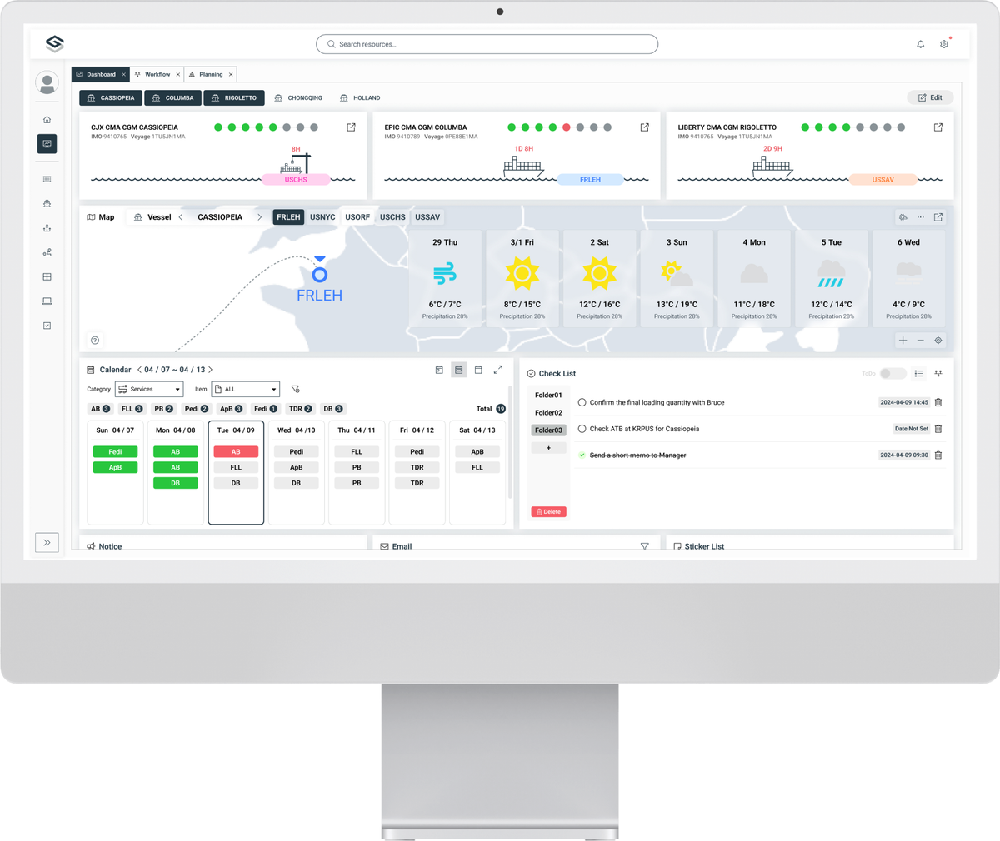
OTHER PROJECTS
기타 프로젝트 - mAOiA
mAOiA 솔루션은 해운사 및 항만 운영에서 출항 관련 데이터를 실시간으로 관리하고 데이터 기반의 분석 및 인사이트 제공을 통해 효율적인 출항 계획 및 운영 결정을 돕는 시스템입니다. 특히, 출항 관리, 특수 화물 관리, 컨테이너 배치 계획(베이플랜) 등의 기능을 자동화하고, 이를 시각화된 인사이트로 제공하여 관리자가 쉽게 분석할 수 있도록 지원하는 것이 핵심입니다.
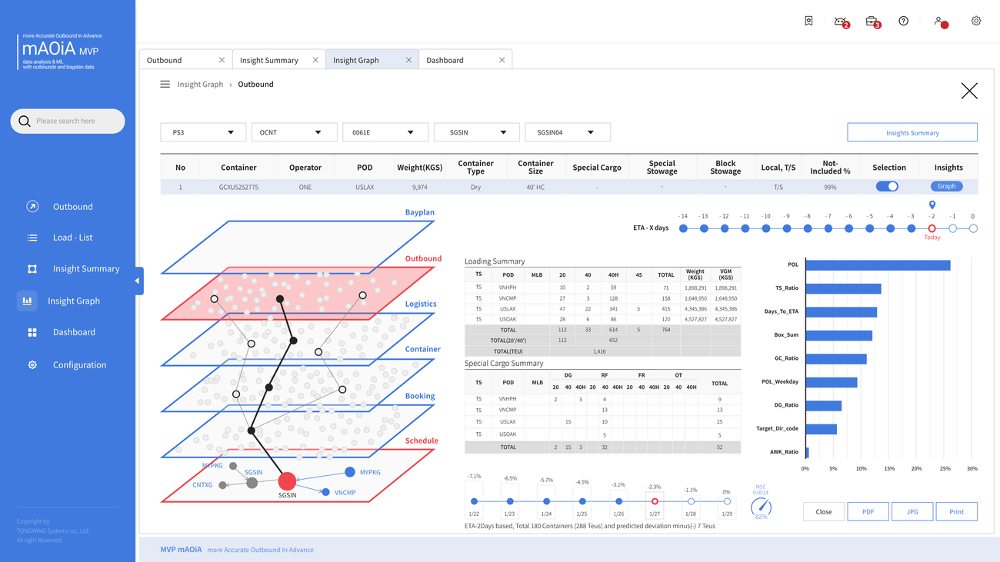
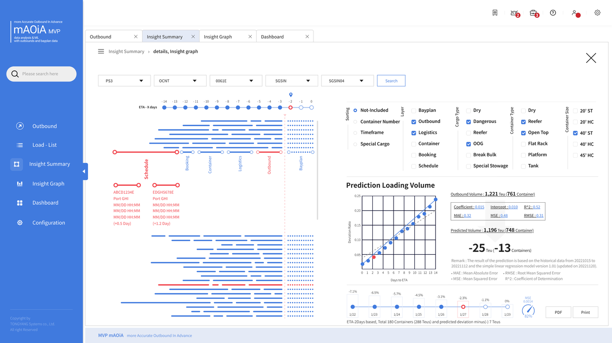
OTHER PROJECTS
기타 프로젝트 - JO
해운사와 항만이 복잡한 정산, 수익 분배, BSA 계약 관리, 할당 설정, 월간 정산, 그리고 데이터 검증을 효과적으로 관리하기 위한 종합 솔루션입니다. 특히 공동 운영 항로에서 여러 이해관계자와의 수익 및 비용 분배, BSA 관리 등을 자동화하고 모니터링하는 기능이 핵심입니다.


OTHER PROJECTS
기타 프로젝트 - NH총무 솔루션
이 솔루션 프로그램은 회사 차량, 휴무 일정, 그리고 다양한 자재들을 효율적으로 관리할 수 있도록 설계된 통합 관리 시스템입니다. 복잡한 자산 관리와 일정 조정 작업을 자동화하여 시간과 비용을 절감하고, 운영 효율성을 극대화하는 것이 핵심입니다.
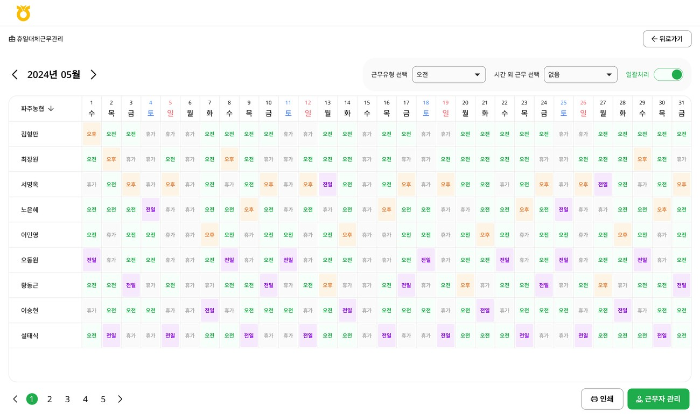
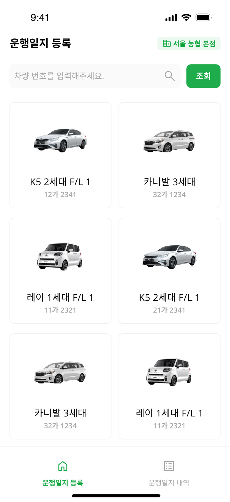
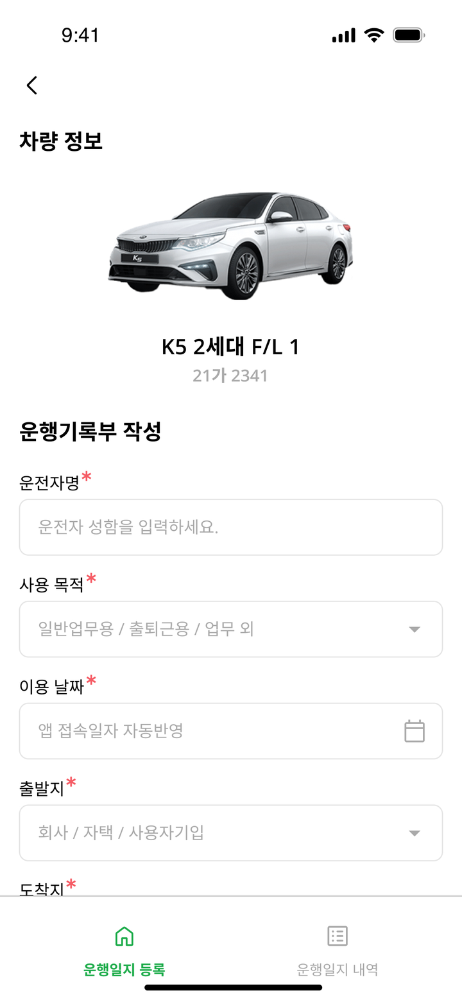
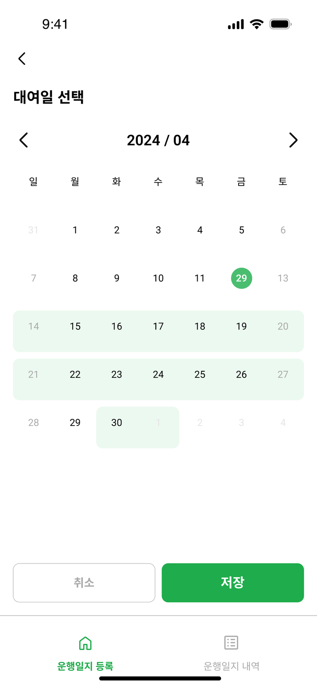
Personal Projects
개인 프로젝트 - Flora Fusion
-
UXUI Design & Prototyping / 기여도 100%
Flora Fusion 솔루션은 화분과 정원 관리를 돕는 도구로, 물주기, 햇빛, 영양제, 거름갈기 등의 일정을 자동으로 관리해 줍니다. 사용자는 자신의 정원과 화분 사진을 SNS처럼 공유하고, 좋아요, 댓글, 공유 기능을 통해 소통할 수 있습니다. 또한, 가상 식물을 기르며 목표 달성 시 실제 화분을 받을 수 있고, 화분 관련 제품 구매 및 식물 정보 검색 기능도 제공하여 손쉽게 필요한 정보를 얻을 수 있습니다.
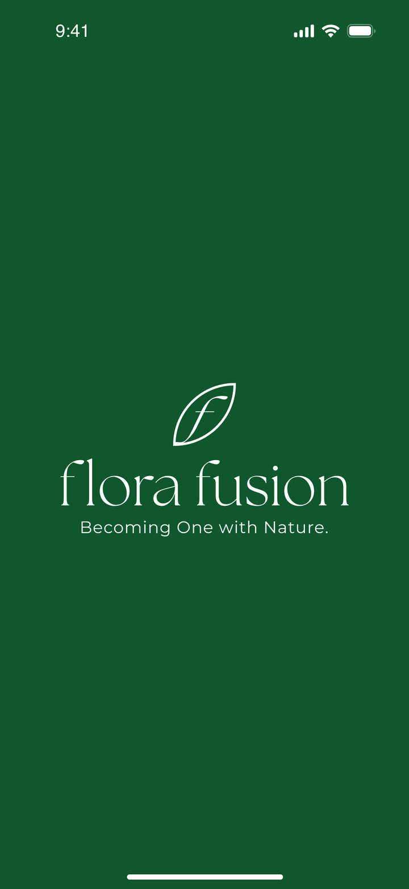
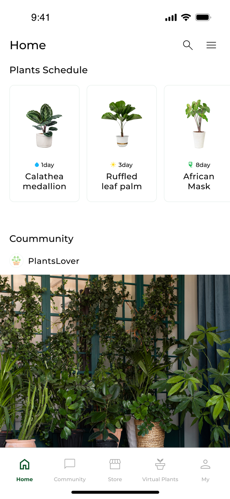
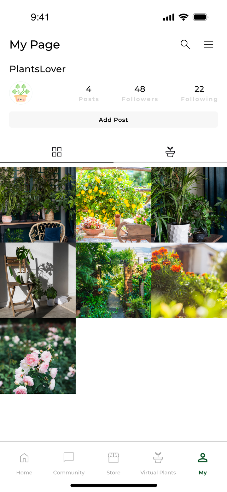
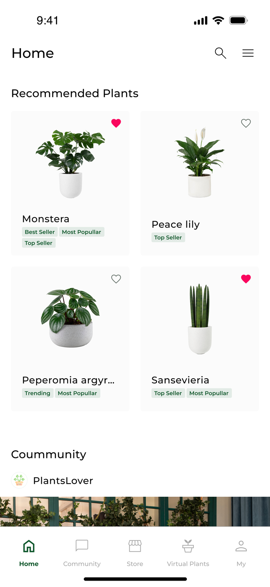
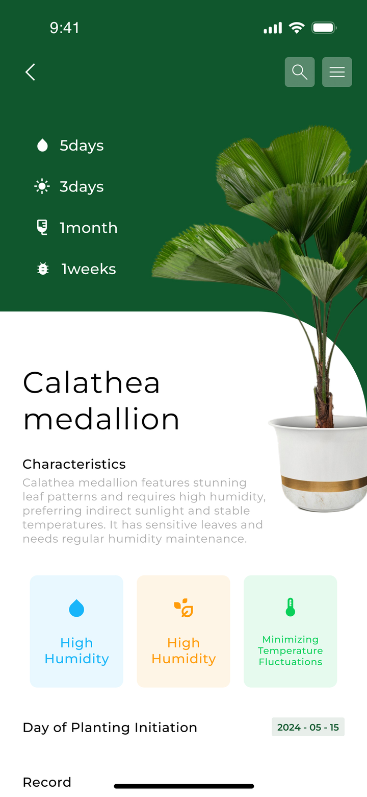